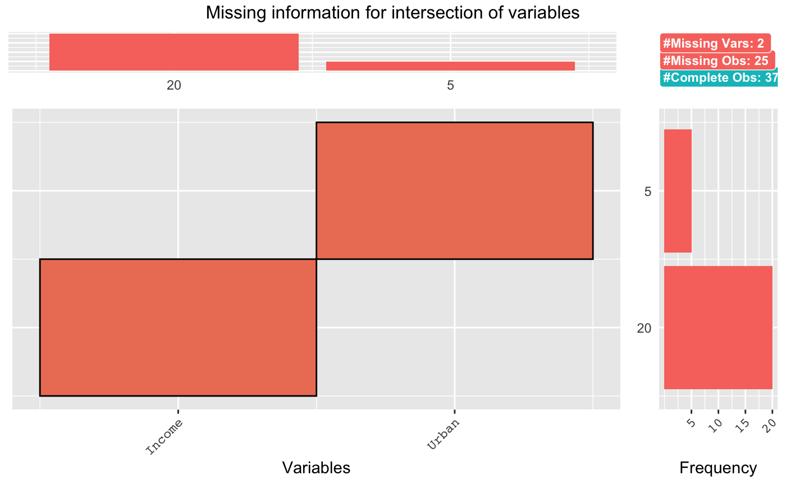
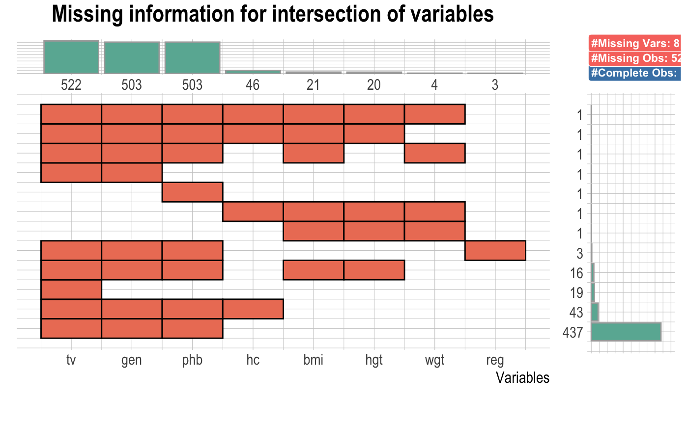
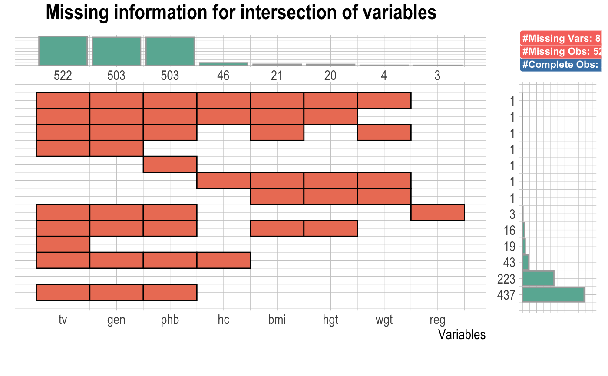
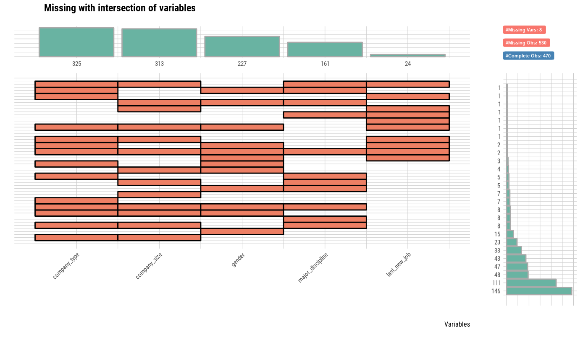
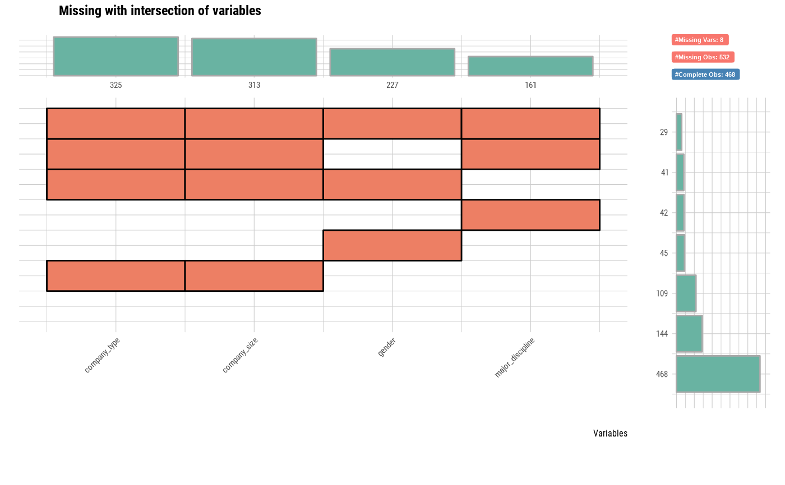

Plot the combination variables that is include missing value
Source:R/missing.R
plot_na_intersect.RdVisualize the combinations of missing value across cases.
plot_na_intersect( x, only_na = TRUE, n_intersacts = NULL, n_vars = NULL, main = NULL, typographic = TRUE, base_family = NULL )
Arguments
| x | data frames, or objects to be coerced to one. |
|---|---|
| only_na | logical. The default value is FALSE. If TRUE, only variables containing missing values are selected for visualization. If FALSE, included complete case. |
| n_intersacts | integer. Specifies the number of combinations of variables including missing values. The combination of variables containing many missing values is chosen first. |
| n_vars | integer. Specifies the number of variables that contain missing values to be visualized. The default value is NULL, which visualizes variables containing all missing values. If this value is greater than the number of variables containing missing values, all variables containing missing values are visualized. Variables containing many missing values are chosen first. |
| main | character. Main title. |
| typographic | logical. Whether to apply focuses on typographic elements to ggplot2 visualization. The default is TRUE. if TRUE provides a base theme that focuses on typographic elements using hrbrthemes package. |
| base_family | character. The name of the base font family to use for the visualization. If not specified, the font defined in dlookr is applied. (See details) |
Details
The visualization consists of four parts. The bottom left, which is the most basic, visualizes the case of cross(intersection)-combination. The x-axis is the variable including the missing value, and the y-axis represents the case of a combination of variables. And on the marginal of the two axes, the frequency of the case is expressed as a bar graph. Finally, the visualization at the top right expresses the number of variables including missing values in the data set, and the number of observations including missing values and complete cases .
The base_family is selected from "Roboto Condensed", "Liberation Sans Narrow", "NanumSquare", "Noto Sans Korean". If you want to use a different font, use it after loading the Google font with import_google_font().
Examples
# \donttest{ # Generate data for the example set.seed(123L) jobchange2 <- jobchange[sample(nrow(jobchange), size = 1000), ] # Visualize the combination variables that is include missing value. plot_na_intersect(jobchange2)# Diagnose the data with missing_count using diagnose() function library(dplyr) jobchange2 %>% diagnose %>% arrange(desc(missing_count))#> # A tibble: 14 x 6 #> variables types missing_count missing_percent unique_count unique_rate #> <chr> <chr> <int> <dbl> <int> <dbl> #> 1 company_type factor 291 29.1 7 0.007 #> 2 company_size ordered 278 27.8 9 0.009 #> 3 gender factor 236 23.6 4 0.004 #> 4 major_discipl… factor 137 13.7 7 0.007 #> 5 education_lev… ordered 21 2.1 6 0.006 #> 6 last_new_job ordered 17 1.7 7 0.007 #> 7 enrolled_univ… factor 12 1.2 4 0.004 #> 8 experience ordered 4 0.4 23 0.023 #> 9 enrollee_id charac… 0 0 1000 1 #> 10 city factor 0 0 94 0.094 #> 11 city_dev_index numeric 0 0 73 0.073 #> 12 relevent_expe… factor 0 0 2 0.002 #> 13 training_hours integer 0 0 191 0.191 #> 14 job_chnge factor 0 0 2 0.002# Visualize the combination variables that is include missing value plot_na_intersect(jobchange2)# Visualize variables containing missing values and complete case plot_na_intersect(jobchange2, only_na = FALSE)# Using n_vars argument plot_na_intersect(jobchange2, n_vars = 5)# Using n_intersects argument plot_na_intersect(jobchange2, only_na = FALSE, n_intersacts = 7)# Non typographic elements plot_na_intersect(jobchange2, typographic = FALSE)# }